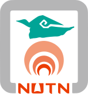

張瀚文 Han-Wen Chang
生技研發專案經理 (R&D PM) | 產品經理 (Product Manager)
國立成功大學生命科學碩士。具備 4 年生技醫材與試劑研發管考資歷，2 度主導經濟部 SBIR 國家專案、熟悉 ISO 13485/14971 醫材品質與風險管理、EN 13612 體外診斷確效及臨床試驗統籌。2026 年完成勞動部 400 小時「Agentic AI 應用開發與部署」專業培訓，致力於以 AI 自動化與數據思維賦能生醫產品商業化落地。
Core Philosophy
連結「實驗室技術」與「商業市場」的橋樑
生醫產品的成功，不只取決於實驗桌上的數據，更仰賴嚴謹的法規佈局、穩健的供應鏈成本結構，以及高效的跨部門協作。我以三大核心方法論推動專案落地：
跨職能專案治理與敏捷應變
生醫研發常伴隨高度不確定性。我擅長擔任生技研發、硬體工程（光學/電子/機構）與臨床醫院之間的「共同語言翻譯者」，透過關鍵路徑拆解與風險預警機制，在面對技術瓶頸或斷料危機時迅速重組資源。
- 里程碑查核點 (Milestone) 與滾動式風險盤點
- 產、學、醫三方多中心資源對齊與溝通推進
法規驅動的產品商業化思維
在生技醫療器材與體外診斷 (IVD) 領域，「合規性」就是最強的商業護城河。我習慣在產品開發初期即導入設計管制 (Design Control) 與競品法規壁壘分析，並同步把關原物料採購與進出口合規，讓產品兼具毛利空間與市場准入優勢。
- 以法規標準倒推研發規格，降低後期重工成本
- 從硬體思維轉向「設備＋耗材試劑」經常性營收佈局
Agentic AI 賦能研發與營運
我不只使用 AI 工具，更具備設計與部署 AI 自動化流程的能力。結合生醫專業背景與 400 小時系統化程式與 AI 代理訓練，將繁瑣的法規文獻檢索、實驗數據清洗與團隊行政管考轉化為低失誤的數位自動化管線。
- 多代理 (Multi-Agent) 與 RAG 知識檢索系統規劃
- 無程式碼 / 低程式碼雲端工作流建置，釋放團隊產能
Competencies & Toolstack
核心職能矩陣與工具棧
整合專案管理、醫療器材法規、AI 軟體工程與分子生物學四大維度，具備快速跨界對接能力。
產品規劃與研發專案管理
Product Management & R&D Operations
- 政府科專計畫管考：SBIR 計畫書撰寫、預算編列、WBS 工作拆解、期中/期末簡報答辯與經費核銷。
- 產品商業分析：醫療器材競品技術與專利地圖分析、目標市場准入評估、商業模式轉型規劃。
- 供應鏈與生管控管：BOM 表成本分析、供應商詢比議價機制、關鍵零組件 EOL 替代方案與進出口報關協調。
醫材法規認證與品質系統
Regulatory Affairs (RA) & Quality Assurance (QA)
- 醫療器材品質與風險管理：ISO 13485 品質系統文件維護、ISO 14971 風險分析報告編撰、工程變更 (ECN) 與外部稽核應對。
- 體外診斷 (IVD) 系統確效：EN 13612 性能評估規範、光學檢測模組線性度、精密度與偵測極限驗證。
- 臨床倫理與國際法規評估：醫院人體試驗委員會 (IRB) 臨床試驗送審管考、跨國潛在市場准入法規與競品壁壘分析。
Agentic AI 與數據自動化工程
Agentic AI, Data Science & Workflow Automation
- Agentic AI 應用開發：大型語言模型 Prompt Engineering、檢索增強生成 (RAG) 概念、自動化文獻與法規情報檢索代理設計。
- Python 數據處理與機器學習：運用 Pandas 進行實驗與商業數據清洗、特徵工程、探索性資料分析 (EDA) 與基礎統計機器學習建模。
- 雲端辦公流程自動化：Google Apps Script (GAS) 串接 Gmail / Drive / Sheets API，打造主動式防呆稽核與自動歸檔管線。
分子生物技術與實驗室營運
Molecular Biology & Assay Development
- 分子診斷與試劑開發：PCR、RT-qPCR (SYBR Green / TaqMan)、恆溫核酸擴增檢測、miRNA 生物標記定量分析。
- 細胞與基因工程平台：Western Blotting、ELISA、CRISPR/Cas9 基因編輯、質體構築、慢病毒包裝與 DNA Fiber Assay。
- 實驗室標準化與品管：P2 生物安全實驗室建置、臨床血液/血清檢體前處理 SOP 制定、試劑再現性 (Reproducibility) 優化。
專案管理與跨領域實戰工具棧 (PM & Technical Toolstack)
日常用於專案排程、法規文件控管、AI 開發與科學統計之核心工具
甘特圖排程 (Gantt / WBS)、跨部門查核點管考、Notion、Git / GitHub、Google Workspace、Excel 樞紐與財務核銷模型
DHF 設計歷史檔案、ISO 14971 風險管理卷宗、ECN 工程變更單、SOP 標準作業程序書、IRB 臨床試驗計畫書
Python、Pandas、Scikit-learn、Agentic AI 工作流、LLM Prompt Engineering、Google Apps Script (GAS)
qPCR 定量分析軟體、光學線性度迴歸分析、NCBI / PubMed 生物資訊庫、全球醫療器材法規與專利資料庫檢索
Career Journey
工作經歷與職涯實績
4 年生技醫材與試劑研發管理資歷，並於 2026 年完成 400 小時 Agentic AI 密集工程實訓，具備完整的技術整合視野。
Agentic AI 應用開發與部署就業班 · 結業
為強化生醫研發與產品管理的數位賦能實力，投入 400 小時全職實作訓練。系統化掌握 Python 程式開發、Pandas 數據清洗與探索性分析、統計機器學習模型，以及 Agentic AI 多代理工作流設計與部署，將過去在醫材法規審查、文獻檢索與專案管考的產業痛點轉化為自動化軟體解決方案。
副研究員 / 醫療器材研發工程師
研發處副研究員 暨 生產管理部經理
Portfolio & Case Studies
代表專案與研究實績
點擊各專案卡片下方按鈕，可檢視完整 STAR 執行脈絡（背景挑戰、核心行動、量化成果）與系統流程架構圖。
恆溫核酸檢測儀開發計畫
角色：計畫聯絡人 / 核心研發成員
化解關鍵零組件停產 (EOL) 與 PCB 改版排程危機，確立「單光源雙通道」光學架構（線性度 R² > 0.99），通過 EN 13612 體外診斷確效並 100% 達成查核點驗收。
miRNA 癌症診斷套組開發計畫
角色：計畫主持人 / 核心研發成員
臨危受命接手進度落後專案，統籌輔大、北榮與聖保祿三方 IRB 臨床試驗（70+ 例檢體），以「新鮮檢體」QC 策略突破專一性瓶頸，逆轉局勢獲全額補助。
生醫法規與臨床數據 AI 智慧分析管線
角色：Python 資料工程與 AI 代理流程設計
結合 400 小時專班所學之 Python、Pandas、統計機器學習與 Agentic AI 架構，建置針對生醫實驗數據清洗、競品法規比對與文獻自動結構化摘要之智慧分析流程。
週報自動備份及防呆稽核系統
角色：獨立架構設計與 GAS 腳本實作
以 LLM 協同開發 Google Apps Script 串接 Gmail 與 Drive API，自動解析信件附件歸檔並校驗檔案時間戳記，消除每週 30 分鐘人工逐項檢查，達成管理零疏漏。
PLoS Genetics 國際期刊論文發表
"PARP1 recruits DNA translocases to restrain DNA replication and facilitate DNA repair"
探討 PARP1 蛋白於 DNA 複製壓力下募集轉位酶（HLTF / SHPRH）調控複製叉逆轉與修復之分子機轉，展現高精密度單分子實驗與數據統計論證實力。
Academic & Professional Training
學歷背景與專業培訓

國立臺南大學
生物科技學系 學士畢業
奠定微生物學、生物化學、基因重組與細胞工程核心基礎，培養跨領域生物科技整合思維與實驗室安全操作規範。
國立成功大學
生命科學系 碩士畢業
專攻分子生物學與 DNA 複製修復機制，培養嚴謹實驗設計、生物統計與英文科學文獻批判能力。碩士研究成果發表於國際頂尖期刊 PLoS Genetics (IF 6.02)。
勞動部跨領域專業培訓
Agentic AI 應用開發與部署就業班
完成 400 小時全職密集實訓，深入掌握 Python 程式設計、Pandas 資料清洗與探索分析、統計機器學習建模，以及 Agentic AI 多代理系統開發與部署。
語言與跨國溝通能力
中文：精通（母語，擅長政府科專計畫書與法規文件撰寫）
英文：專業工作應用（國際 SCI 文獻審閱、ISO / EN 法規標準解讀與商業書信溝通）
台語：流利日常溝通
法規與實驗室實務資格
• 醫材品質與風險：ISO 13485 系統維護 / ISO 14971 風險管理實務
• 臨床與診斷確效：IRB 人體試驗計畫送審 / EN 13612 體外診斷確效實務
• 實驗室安全規範：P2 級生物安全實驗室標準操作與臨床檢體 QC
職涯目標與工作型態
目標職務：生技研發專案經理 (R&D PM)、產品經理 (PM)、醫療器材研發/法規工程師、AI 應用專案管理
期望地點：台北市、新北市（支援遠端與混合辦公）
Get in Touch
歡迎聯絡洽談與合作
無論是生技與醫材產品開發、SBIR 國家專案規劃、AI 自動化導入，或專案經理與研究員職缺面談，誠摯歡迎與我聯繫。
發送快速洽談訊息
填寫以下資訊並留下您的回信 Email，即可直接透過本網頁將訊息寄至我的信箱（免跳轉郵件軟體）：